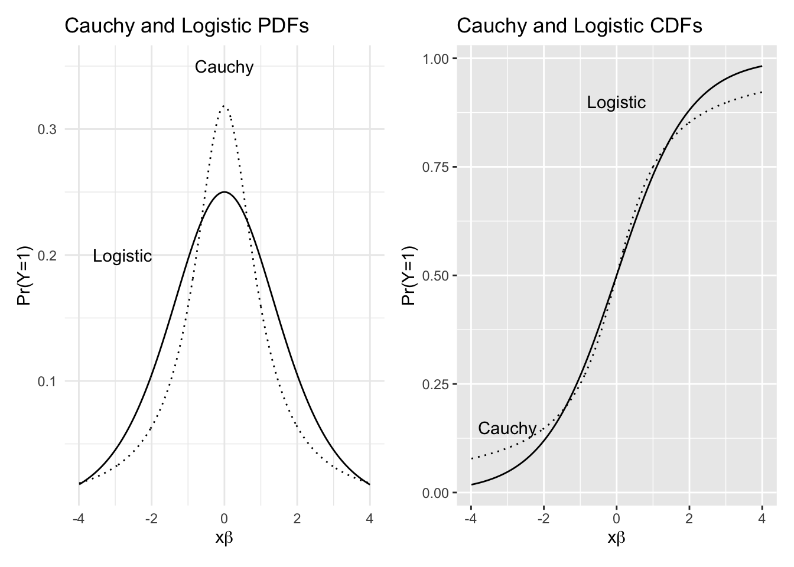
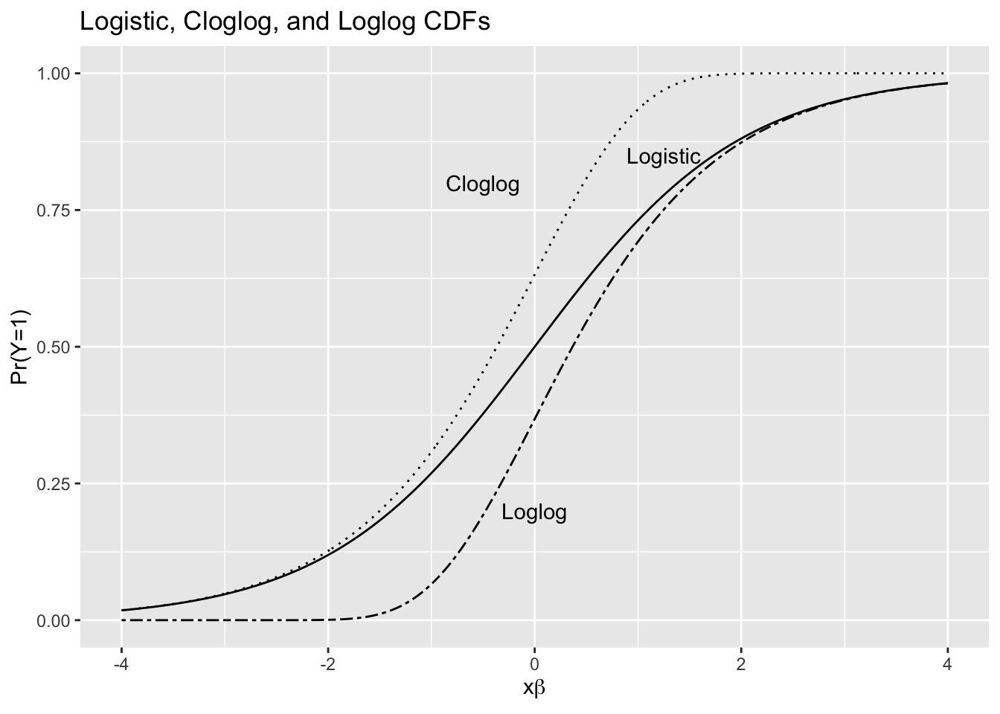
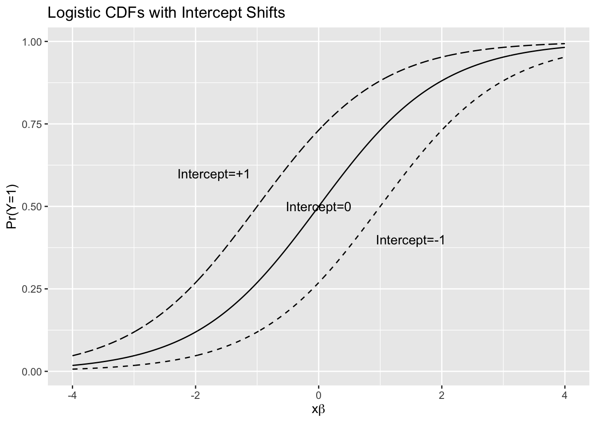
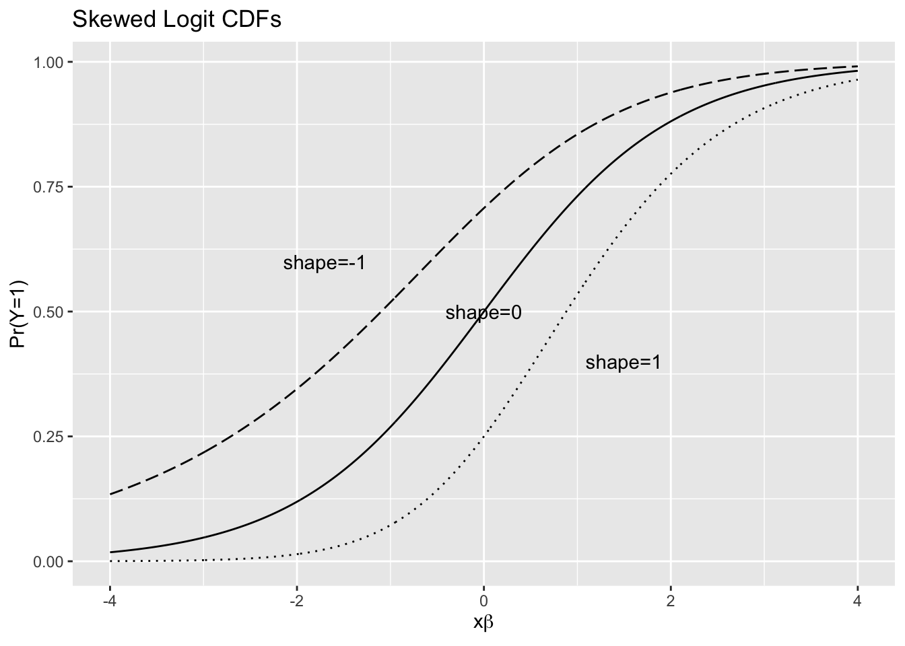

Please answer the following questions. All answers should be coded in R and submitted in PDF format, created either in LaTeX or in R Markdown (Quarto). Please turn in both R scripts and PDFs on Brightspace.
For this assignment, the only R libraries you need (should use) are
tidyverse for data management
ggplot2 for plotting
patchwork for question #1 plots
modelsummary for summary tables of data, regression results or,
stargazer for nice tables of regression results
This assignment is aimed at developing coding skills/habits, an understanding of probability distributions, their relationship to data, and some basic data management.
For this section, please write out all PDF/CDF equations - that is, do not use built-in R functions (e.g. plogis, etc.).
Please replicate this figure. What do the PDFs describe? What do the CDFs describe?
code
xb <-runif(1000, min=-4, max=4)logitcdf <-1/(1+exp(-xb))cauchycdf <-1/2+atan(xb)/pilogitpdf <-exp(xb)/(1+exp(xb))^2cauchypdf <-1/(pi*(1+xb^2))df <-data.frame(xb, logitcdf, cauchycdf, logitpdf, cauchypdf)#cdf cdf <-ggplot(data=df, aes(x=xb, y=logitcdf)) +geom_line() +geom_line(aes(y=cauchycdf), linetype="dotted" ) +annotate("text", x =0, y = .9, label ="Logistic") +annotate("text", x =-3, y = .15, label ="Cauchy") +labs(y="Pr(Y=1)", x=expression(x*beta)) +ggtitle("Cauchy and Logistic CDFs")pdf <-ggplot(data=df, aes(x=xb, y=logitpdf)) +geom_line() +geom_line(aes(y=cauchypdf), linetype="dotted" ) +annotate("text", x =0, y = .35, label ="Cauchy") +annotate("text", x =-2.8, y = .2, label ="Logistic") +labs(y="Pr(Y=1)", x=expression(x*beta)) +ggtitle("Cauchy and Logistic PDFs") +theme_minimal()pdf-cdf

Please replicate this figure - it overlays plots of:
the logistic CDF
the cloglog CDF
the loglog CDF
Comment on the differences among the three.
code
# plot CDFs for logistic, cloglog, and loglog distributionsxb <-seq(-4, 4, length.out=1000)logistic <-1/(1+exp(-xb))cloglog <-1-exp(-exp(xb))loglog <-exp(-exp(-xb)) df <-data.frame(xb, logistic, cloglog, loglog)ggplot(data=df, aes(x=xb, y=logistic)) +geom_line() +geom_line(aes(y=cloglog), linetype="dotted") +geom_line(aes(y=loglog), linetype="twodash") +annotate("text", x =1.25, y = .85, label ="Logistic") +annotate("text", x =-.5, y = .8, label ="Cloglog") +annotate("text", x =0, y = .2, label ="Loglog") +labs(y="Pr(Y=1)", x=expression(x*beta)) +ggtitle("Logistic, Cloglog, and Loglog CDFs")

Please replicate this figure - it overlays plots of:
the logistic CDF with intercept of zero
the logistic CDF with intercept of -1
the logistic CDF with intercept of +1
Please describe what you see happening at the intercept changes. Compare these intercept shifts to intercept shifts in the linear model.
code
#logit cdf at -2, -1, 0, 1, 2xb <-seq(-4, 4, length.out=1000)logitcdfm1 <-1/(1+exp(-xb-1))logitcdf0 <-1/(1+exp(-xb))logitcdf1 <-1/(1+exp(-xb+1))df <-data.frame(xb, logitcdfm1, logitcdf0, logitcdf1)ggplot(data=df, aes(x=xb, y=logitcdf0)) +geom_line() +geom_line(aes(y=logitcdfm1), linetype="longdash") +geom_line(aes(y=logitcdf1), linetype="dashed") +annotate("text", x =1.5, y = .4, label ="Intercept=-1") +annotate("text", x =0, y = .5, label ="Intercept=0") +annotate("text", x =-1.7, y = .6, label ="Intercept=+1") +labs(y="Pr(Y=1)", x=expression(x*beta)) +ggtitle("Logistic CDFs with Intercept Shifts")

Please replicate this figure - it overlays plots of:
the skewed logit CDF with shape parameter of 1
the skewed logit CDF with shape parameter of 2
the skewed logit CDF with shape parameter of .5
Please describe what you see happening at the shape parameter changes. How are these similar/different from the logistic CDF?
code
#overlay skewed logit cdfsxb <-seq(-4, 4, length.out=1000)scobit1 <-1/((1+exp(-xb))^1)scobit0 <-1/((1+exp(-xb))^2)scobitp5 <-1/((1+exp(-xb))^.5)df <-data.frame(xb, scobit1, scobit0, scobitp5)ggplot(data=df, aes(x=xb, y=scobit1)) +geom_line() +geom_line(aes(y=scobit0), linetype="dotted") +geom_line(aes(y=scobitp5), linetype="longdash") +annotate("text", x =1.5, y = .4, label ="shape=1") +annotate("text", x =0, y = .5, label ="shape=0") +annotate("text", x =-1.7, y = .6, label ="shape=-1") +labs(y="Pr(Y=1)", x=expression(x*beta)) +ggtitle("Skewed Logit CDFs")

Please write code that simulates data for a binary \(y\) variable, from the equation \(y = \beta_0*-1 + \beta_1*.5 x + \beta_2*-.5\). The output should be a data frame of 1000 observations with a binary \(y\) variable, a constant, and 2 \(x\) variables.
Please write (in proper math notation, not code) a likelihood and log-likelihood function for a binary \(y\) variable using the cloglog as the link function.
You’ll find a dataset alongside this assignment called ces.csv. It contains data from the Cooperative Election Study for the 2020 election via the “American Voter Bot” on Twitter. Variable descriptions are in the data. More information is in the notes section below.
You’ll need to look carefully at the variables, recode/clean as necessary prior to estimation - please include all code for this so it can be replicated.
Please estimate logit and probit models predicting vote choice as a function of whatever variables you think are relevant. Please present a professional table of the estimates in side-by-side columns and discuss. Explain your thinking about the models - why did you include these variables, and what do you expect?
Compute odds ratios for variables of interest in the logit model and discuss.
Please generate predicted probabilities and intervals from both models and present professional plots (separately, one plot for each model). For the logit, please use average effects; for the probit, please use at-mean effects. For both, the \(x\) axis should be a continuous variable; for each, please plot two lines, one for each value of a binary variable of interest. Please write code for these (i.e. do not use built-in functions).
code
ces <-read_csv("ces.csv")cesanalysis <- ces %>%mutate(pro =ifelse(prochoice =="Support", 1, 0), concealw =ifelse(conceal =="Support", 1, 0), buildwall =ifelse(wall =="Support", 1, 0), repealaca=ifelse(aca =="Support", 1, 0), white=ifelse(race =="White", 1, 0), vote=ifelse(votechoice =="Joe Biden (Democrat)", 1, ifelse(votechoice =="Donald J. Trump (Republican)", 0, NA))) m3 <-glm(vote ~ age + white + pro , data=cesanalysis, family=binomial(link="logit"))#summary(m3)stargazer(m3, type="html")
Dependent variable:
vote
age
-0.014***
(0.001)
white
-1.081***
(0.033)
pro
2.851***
(0.026)
Constant
0.408***
(0.051)
Observations
43,225
Log Likelihood
-19,999.930
Akaike Inf. Crit.
40,007.860
Note:
p<0.1; p<0.05; p<0.01
code
# average effects#pro=0cesplotdata <- cesanalysismedianpred <-numeric(length(95))age <-0medianse <-numeric(length(95))for (i inseq(18, 95, 1)) { cesplotdata$pro <-0 cesplotdata$age <- i-17 predictions <-data.frame(predict(m3, type ="response", se=TRUE, newdata=cesplotdata)) medianpred[i-17]<-median(predictions$fit, na.rm=TRUE) medianse[i-17] <-median(predictions$se.fit, na.rm=TRUE) age[i-17] <- i pro <-0} p1<-data.frame(age= age, pro=pro, xb = medianpred, se=medianse)# pro = 1for (i inseq(18, 95, 1)) { cesplotdata$pro <-1 cesplotdata$age <- i-17 predictions <-data.frame(predict(m3, type ="response", se=TRUE, newdata=cesplotdata)) medianpred[i-17]<-median(predictions$fit, na.rm=TRUE) medianse[i-17] <-median(predictions$se.fit, na.rm=TRUE) age[i-17] <- i pro <-1} p2<-data.frame(age= age, pro= pro, xb = medianpred ,se=medianse)allpredictions <-rbind(p1, p2) ## predictions by prochoice using color="#005A43" and "#6CC24A" for ribbon fillsggplot(data=allpredictions, aes(x=age, y=xb, color=factor(pro))) +geom_line() +geom_ribbon(aes(ymin=xb-se, ymax=xb+se, fill=factor(pro)), alpha=.2) +labs(y="Predicted Probability", x="Age") +ggtitle("Predicted Probabilities of Voting for Biden by Age and Pro-Choice Stance") +scale_color_manual(values=c("#005A43", "#6CC24A")) +scale_fill_manual(values=c("#005A43", "#6CC24A")) +theme_minimal()